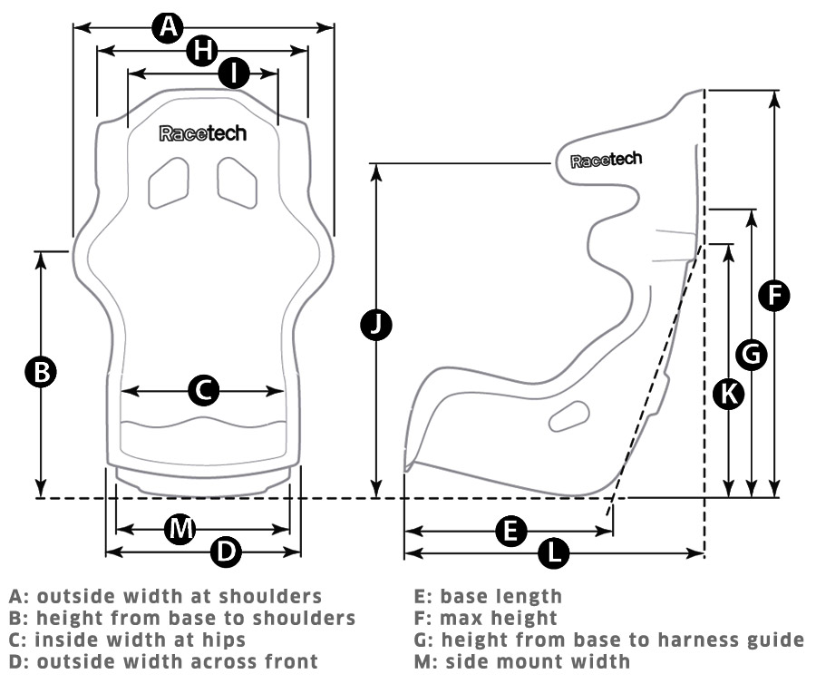
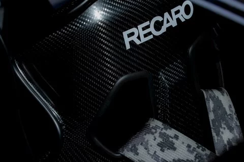

recaro


At RECARO, driver protection is about more than just giving you the impression you’re in safe hands. It’s our utmost priority. We act on the maxim of delivering uncompromising safety, reliability and durability to protect our customers under every circumstance and condition.
| Dynamic |
Race |
Comfort |
| CS |
pro racer |
expert |
| GT |
profi |
specialist |
The RECARO Pro Racer – our premium product for GT and touring cars built to the FIA 8855-1999 standard – was developed for HANS driver safety systems and comes in four versions. The seat is available in glass fiber reinforced polymer (GFRP), and in various sizes, including an XL option for drivers of larger build. The Pro Racer fits like a glove.